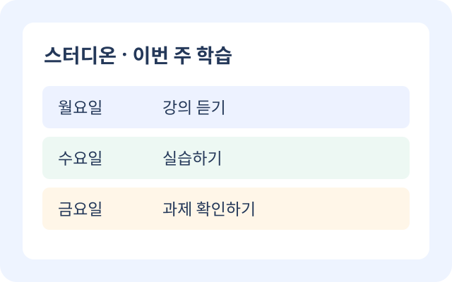

- 이번 주 학습 목표
- 학습 시간
- 이메일 (발송되지 않음)
- 과제 마감일
- 보관한 날짜
서비스 안내
스터디온은 온라인 강의와 과제를 위한 학습 계획을 세우고, 보관한 목표를 다시 찾아 실천하도록 돕는 서비스입니다.
일과 학업을 병행하는 학생이 이번 주 할 일을 확인하고, 작은 목표부터 꾸준히 실천할 수 있도록 기획했습니다.

주요 기능
-
실천할 계획 만들기
과목과 목표, 하루 학습 시간을 정하고 계획을 확인합니다.
-
내 계획 보관하기
확정한 계획을 보관하고 다음 방문에도 목록에서 다시 엽니다.
-
학습 완료 기록하기
실천한 목표를 완료로 표시하고 남은 계획을 확인합니다.
이용 방법
- 관심 과목과 이번 주 학습 목표를 정합니다.
- 하루 학습 시간과 필요한 마감일을 정해 계획을 저장합니다.
- 보관한 계획을 다시 열고 실천한 목표를 학습 완료로 표시합니다.
나의 학습 도구
필요한 도구를 선택해 이번 주 계획을 준비하세요.
하루 학습 시간 정하기
시간을 선택하면 주 5일 기준 학습 시간을 알려드려요.
시작 전 준비 점검
강의 자료와 과제 마감일을 확인했나요? 확인했다면 아래 버튼을 눌러 표시하세요.
아직 준비 전이에요. 강의 자료와 제출 기한을 확인해주세요.
주간 학습 계획 만들기
과목과 목표, 학습 시간을 입력하고 확인 화면에서 저장하세요. 작성 중인 입력은 새로고침하면 사라집니다.
- 1. 시작
- 2. 입력·선택
- 3. 확인
- 4. 완료
1 / 4 단계 · 시작
이번 주에 실천할 목표 하나를 정해볼까요?
완료 조건: 과목·목표·하루 학습 시간을 입력하고, 확인 화면에서 ‘계획 저장’을 누르면 보관함에 추가됩니다.
학습 계획을 저장했어요!
보관함에서 다시 열어보고, 학습을 마치면 완료로 표시하세요.
저장 결과가 여기에 표시됩니다.
MY STUDY PLANS
0개 보관
내 계획 보관함
계획을 다시 열어 목표를 확인하고, 실천했다면 학습 완료로 표시하세요.
최대 30개를 이 브라우저에 보관합니다. 다른 기기와 공유되지 않으며 브라우저 데이터를 지우면 사라집니다. 이메일은 발송하지 않습니다.
보관한 계획이 아직 없어요
계획을 입력하고 확인 화면에서 ‘계획 저장’을 눌러보세요.